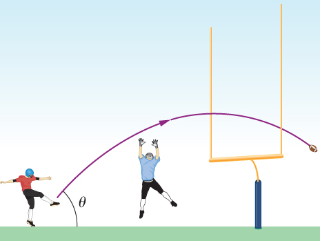

World’s Longest Par 3. The tee of the world’s longest par 3 sits atop South Africa’s Hanglip Mountain at 400.0 m above the green and can only be reached by helicopter. The horizontal distance to the green is 359.0 m. Neglect air resistance and answer the following questions. (a) If a golfer launches a shot that is with respect to the horizontal, what initial velocity must she give the ball? (b) What is the time to reach the green?
Bonus: Modify an Euler's method code to model this problem, and use it to check your answer.
When a field goal kicker kicks a football as hard as he can at to the horizontal, the ball just clears the 3-m-high crossbar of the goalposts 45.7 m away. (a) What is the maximum speed the kicker can impart to the football? (b) In addition to clearing the crossbar, the football must be high enough in the air early during its flight to clear the reach of the onrushing defensive lineman. If the lineman is 4.6 m away and has a vertical reach of 2.5 m, can he block the 45.7-m field goal attempt? (c) What if the lineman is 1.0 m away?
A truck is traveling east at 80 km/h. At an intersection 32 km ahead, a car is traveling north at 50 km/h. (a) How long after this moment will the vehicles be closest to each other? (b) How far apart will they be at that point?